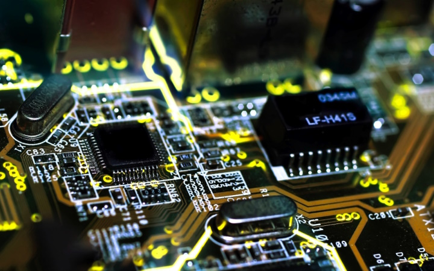

PROYECTO
Eduardo Cárdenas Jiménez
Arquitectura de computadoras
Sistemas Computacionales
6pm-7pm

ÍNDICE
Unidad 1 Arquitectura de computo
- 1.1 Modulos de Arquitectura
- 1.1.1 Clasicas
- 1.1.2 Segmentadas
- 1.1.3 Multiprocesamiento
- 1.2 Análisis de componentes
- 1.2.1 Arquitecturas
- 1.2.1.1 Unidad Central de Procesamiento
- 1.2.1.2 Unidad Aritmética Lógica
- 1.2.1.3 Registros
- 1.2.1.4 Buses
- 1.2.2 Memoria
- 1.2.2.1 Conceptos básicos del manejo de la memoria
- 1.2.2.2 Memoria principal
- 1.2.2.3 Memoria cache
- 1.2.3 Manejo de entrada/salida
- 1.2.3.1 Módulos de entrada/salida
- 1.2.3.2 Entrada/salida programada
- 1.2.3.3 Entrada/salida mediante interrupciones
- 1.2.3.4 Acceso directo a memoria
- 1.2.3.5 Canales y procesadores de entrada/salida
- 1.2.4 Buses
- 1.2.4.1 Tipos de buses
- 1.2.4.2 Estructura de buses
- 1.2.4.3 Jerarquía de buses
- 1.2.5 Interrupciones
Unidad 2 Estructura y funcionamiento de la unidad central de procesamiento
- 2.1 Organización del procesador
- 2.2 Estructura de registros
- 2.2.1 Registros visibles para el usuario
- 2.2.2 Registros de control y estados
- 2.2.3 Ejemplos CPU
- 2.3 El ciclo de la instrucción
- 2.3.1 Ciclo Fetch-Decode-Execute(FDE)
- 2.3.2 Segmentación de instrucciones
- 2.3.3 Conjunto de instrucciones
- 2.3.4 Métodos de direccionamiento
Unidad 3 Selección de componentes para ensamble de equipo de computo
- 3.1 Chipset
- 3.1.1 Unidad central de procesamiento
- 3.1.2 Controlador del bus
- 3.1.3 Punteros de entrada E/S
- 3.1.4 Controlador de interrupciones
- 3.1.5 Controlador de acceso directo a memoria (DMA)
- 3.1.6 Circuitos de temporización
- 3.1.7 Circuitos de control
- 3.1.8 Controlador de video
- 3.2 Aplicaciones
- 3.2.1 Entrada salida
- 3.2.2 Almacenamiento
- 3.2.3 Fuentes de alimentación
- 3.3 Ambientes de servicio
- 3.3.1 Negocios
- 3.3.2 Industria
- 3.3.3 Comercio electrónico
Unidad 4 Procesamiento paralelo
- 4.1 Aspectos básicos de la computación paralela
- 4.2 Tipos de computación paralela
- 4.2.1 Clasificación
- 4.2.2 Arquitectura de computadoras secuenciales
- 4.2.3 Organización de direcciones de memoria
- 4.3 Sistemas de memoria (compartida). Multiprocesadores
- 4.3.1 Redes de interconexión dinámicas o indirectas
- 4.3.2 Redes conmutadas
- 4.4 Sistemas de memoria construida. Multicomputadores
- 4.4.1 Redes de interconexión estáticas
- 4.5 Casos de estudio